فصل دوم — بازنمایی داده، انواع ویژگیها و کیفیت داده#
درس دادهکاوی، کارشناسی ارشد مهندسی کامپیوتر
مسیر آموزشی: از «چه چیزی را اندازه گرفتهایم؟» به «آیا کشف الگو از این داده معتبر است؟»
اهداف یادگیری و جایگاه فصل#
پس از مطالعهٔ این فصل دانشجو باید بتواند: (۱) واحد مشاهده و موجودیت را در یک مجموعهداده تشخیص دهد؛ (۲) برای هر ویژگی، نقش، مقیاس سنجش، دامنهٔ معتبر و معنای فقدان مقدار را ثبت کند؛ (۳) توضیح دهد چرا یک کد عددی لزوماً ویژگی کمی نیست؛ (۴) نمایشهای رکوردی، تراکنشی، ترتیبی و گرافی را متناسب با پرسش دادهکاوی انتخاب کند؛ (۵) کیفیت ثبت، جامعیت، یکتایی، سازگاری و بهموقعبودن داده را با مخرجهای صحیح بسنجد؛ (۶) بین خطای ثبت، نادربودن و رفتار غیرعادی تمایز بگذارد؛ (۷) اثر دادهٔ گمشده و ترکیب ناهمسان زیرگروهها بر نتیجه را با محاسبهٔ دستی نشان دهد؛ و (۸) یک گزارش کیفیت قابل بازتولید و بدون پاکسازیِ مخرب تولید کند.
دریافت فایلهای فصل پس از انتشار در سایت: جزوهٔ PDF · بستهٔ سورس، LaTeX، PDF، تصاویر و کدها · Notebook اجرایی · برنامهٔ پایتون.
پیوند با فصل اول. در فصل نخست، از ده سبد خرید به قاعدهٔ «پوشک \(\Rightarrow\) شیر» رسیدیم و دیدیم که مقدار Support یا Lift بدون بررسی اعتبار داده و فرایند گردآوری کافی نیست. اکنون پرسش بنیادیتر است: سبد خرید را دقیقاً چه چیزی تشکیل میدهد، یک ردیف به چه موجودیتی اشاره میکند، و آیا هر صفر، مقدار خالی یا تکرار واقعاً همان معنایی را دارد که الگوریتم فرض میکند؟ با پاسخ به این پرسشها، مبنای فصل سوم (شباهت و فاصله) و فصل چهارم (پیشپردازش و کاهش بُعد) را میسازیم.
مبنای علمی، مقایسهٔ دو مرجع و مرزبندی#
در کتاب Han, Pei & Tong، ویرایش چهارم، مطالب اصلی این فصل از §۲٫۱، «Data Types» (صفحات چاپی ۲۴–۲۷)، §۲٫۲، «Statistics of Data» (صفحات ۲۷–۴۲)، و بخشهای مقدماتی §۲٫۴، «Data Quality, Data Cleaning, and Data Integration» (از صفحهٔ ۵۵) انتخاب شده است. در کتاب Tan, Steinbach, Karpatne & Kumar، ویرایش دوم، محورهای متناظر عبارتاند از §۲٫۱، «Types of Data» (صفحات چاپی ۲۶–۴۱) شامل ویژگی، سنجش و مجموعهداده، و §۲٫۲، «Data Quality» (صفحات ۴۲–۴۹). شمارهها شمارهٔ چاپی کتاب هستند، نه شمارهٔ صفحه در فایل PDF.
Han در این محدوده تفکیک انواع ویژگی و آمار خلاصهکننده را منظمتر بسط میدهد؛ Tan در کنار مقیاسهای سنجش، از ابتدا نوع مجموعهداده و سپس خطاهای اندازهگیری، دقت، سوگیری و تناسب کیفیت با کاربرد را برجسته میکند. ساختار حاضر این دو رویکرد را حول یک مسئلهٔ مشترک ترکیب میکند: ابتدا ماهیت مشاهده، سپس معنای ویژگی، سپس شکل نمایش و در نهایت قابلیت اعتماد کشف. دستهبندی MCAR/MAR/MNAR، مثال Simpson، قواعد کنترل عملی و بحث نشت داده، بسط آموزشی مستقل با اتکا به منابع تکمیلی هستند و نباید بهاشتباه نقل مستقیم از دو کتاب تلقی شوند.
مرز فصل: رابطهٔ شباهت بین دو رکورد و انتخاب متریک مناسب به فصل سوم واگذار میشود؛ روشهای عملی جایگذاری مقادیر گمشده، مقیاسبندی، نمونهگیری و کاهش بُعد در فصل چهارم با عمق الگوریتمی میآیند. در این فصل، هدف تشخیص مسئله و ارزیابی پیامدهای آن است، نه فهرستکردن بیضابطهٔ الگوریتمها.
۲ـ۱. مسئلهٔ آغازین: یک جدول فروش و سه پاسخ متفاوت#
فرض کنید سامانهٔ یک فروشگاه اینترنتی در یک روز، اطلاعات ۱۴ ردیف کالا را ثبت کرده است. هر ردیف شامل شمارهٔ فاکتور، شمارهٔ ردیف، شناسهٔ مشتری، زمان رویداد، زمان ورود به پایگاه داده، کد کالا، تعداد، قیمت واحد، کشور، کانال سفارش و سطح خدمت است. این مجموعهداده ساختگی و آموزشی است؛ فایل retail_lines_synthetic.csv در بستهٔ فصل قرار دارد و به دادهٔ واقعی هیچ فروشگاهی نسبت داده نمیشود.
سه سؤال به ظاهر مشابه مطرح میکنیم:
چند قلم کالا ثبت شده است؟ ۱۴ ردیف.
چند فاکتور متمایز ثبت شده است؟ ۱۲ شناسهٔ فاکتور.
چند سبد خرید معتبر برای تحلیل همخریدی خواهیم داشت؟ پس از حذف تکرار ثبت، کنارگذاشتن فاکتور برگشت و کنارگذاشتن دو ردیف دارای خطای آشکار تعداد/قیمت، در این مثال ۹ سبد معتبر باقی میماند.
این سه پاسخ با یکدیگر تناقض ندارند؛ واحد شمارش متفاوت است. در فاکتور I001، ردیف شمارهٔ ۱ مربوط به کالای P01 و ردیف شمارهٔ ۲ مربوط به P02 است. این دو ردیف تکراری نیستند؛ آنها دو قلم متعلق به یک سبد هستند. در مقابل، ردیف I008, line 1 عیناً دو بار وارد شده است؛ احتمال تکرار در مرحلهٔ ورود داده وجود دارد و برای تحلیل باید با کلید تجاری کنترل شود. فاکتور C009 بازگشت کالا را با تعداد منفی ثبت کرده است؛ این مقدار، با قرارداد اعلامشده، خطا نیست.

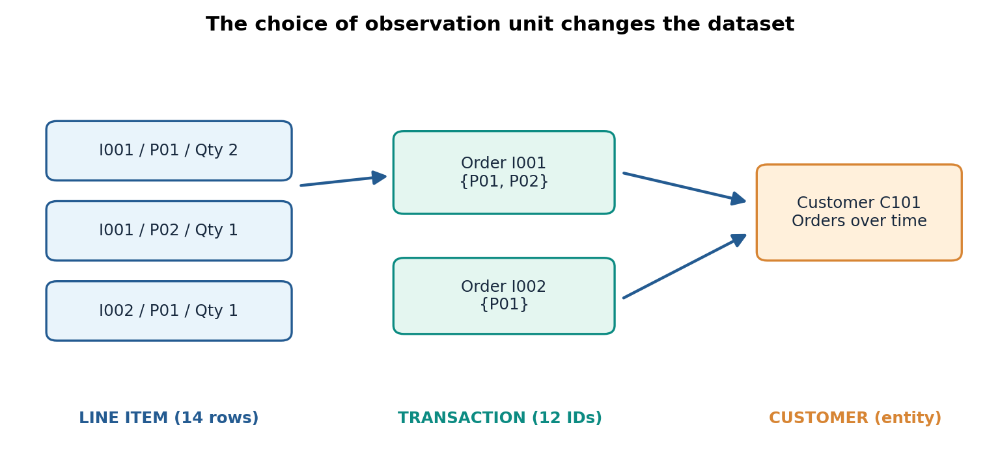
Fig. 9 شکل ۲ـ۱. یک جهان واقعی با سه واحد مشاهده: ردیف کالا، تراکنش و مشتری. انتخاب نادرست واحد مشاهده، مخرج محاسبهٔ پشتیبان قواعد انجمنی را تغییر میدهد. شکل تألیفی.#
پیش از اجرای هر الگوریتم، این جمله را کامل کنید: «هر ردیف از جدول تحلیلی من نمایندهٔ یک … است.» اگر نمیتوان آن را بدون ابهام کامل کرد، احتمالاً هنوز مسئله بهدرستی تعریف نشده است.
۲ـ۱ـ۱. دانهبندی داده و کلید#
در دادهٔ رکوردی، دانهبندی (Data Grain) تعیین میکند یک مشاهده دقیقاً به چه واقعیتی اشاره دارد. اگر داده در سطح ردیف کالا باشد، زوج (order_id, line_no) نامزد کلید یکتاست. اگر داده به سطح سبد تبدیل شود، order_id کلید است. اگر هدف مطالعهٔ وفاداری مشتری در هر ماه باشد، زوج (customer_id, month) کلید تحلیلی خواهد بود؛ نه شناسهٔ ردیف کالا و نه شناسهٔ فاکتور.
فرض کنید در روزی \(N_L=14\) ردیف ثبت شده، \(N_T=12\) فاکتور متمایز داریم و برای هر مشتری تعداد متفاوتی فاکتور وجود دارد. اگر فراوانی یک کالای خاص را با تقسیم تعداد ردیفهای کالا بر تعداد فاکتورها محاسبه کنیم، چیزی متفاوت از نسبت سبدهای دارای آن کالا به دست میآید. مخرج دقیق باید از مسئله استخراج شود. مثلاً برای قواعد انجمنی در سطح فاکتور:
که \(\mathcal T\) مجموعهٔ تراکنشهای واجد شرایط تحلیل است، نه همهٔ ردیفهای خام و نه همهٔ مشتریان.
۲ـ۱ـ۲. شیء داده، ویژگی و نقش آن#
یک شیء داده (Data Object) میتواند فرد، فاکتور، کالا، رویداد حسگر یا یک قطعهٔ زمانی باشد. ویژگی (Attribute) مشاهده یا توصیفی دربارهٔ آن شیء است. برای تحلیل، علاوه بر نوع ویژگی، باید نقش آن را ثبت کرد: کلید شناسهای، زمان، متغیر پاسخ، متغیر توصیفی، وزن نمونه، متغیر کنترل، یا ویژگی بالقوهٔ نشت اطلاعات.
برای مثال customer_id=101 از نظر ذخیرهسازی میتواند عدد صحیح باشد، ولی عدد ۱۰۲ «بزرگتر» از مشتری ۱۰۱ نیست. اگر از شناسهٔ مشتری میانگین بگیریم، عدد بهدستآمده هیچ رفتار مصرفکنندهای را توصیف نمیکند. این نکته نخستین گام تشخیص نوع معنایی از نوع حافظهای/برنامهنویسی داده است.
۲ـ۲. معنا و مقیاس سنجش ویژگیها#
در برنامهنویسی، یک ستون ممکن است int, float, str یا datetime باشد. در دادهکاوی پرسش عمیقتری داریم: چه تبدیلها و مقایسههایی معنای پدیده را حفظ میکنند؟ پاسخ، مقیاس سنجش یا Measurement Scale را روشن میکند.

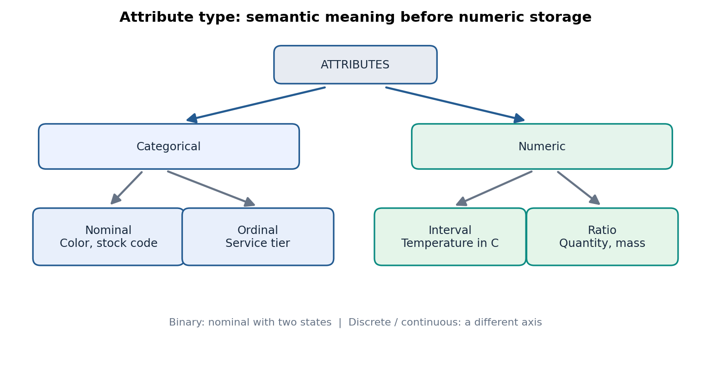
Fig. 10 شکل ۲ـ۲. طبقهبندی مفهومی ویژگیها: اسمی و ترتیبی در یک سوی، فاصلهای و نسبتی در سوی دیگر. دودوییبودن و گسسته/پیوستهبودن دو صفت مکملاند، نه چهار ردهٔ ناسازگار. شکل تألیفی.#
۲ـ۲ـ۱. اسمی (Nominal): فقط تشخیص برابری#
مقادیر web و app برای کانال فروش، یا P01 و P02 برای کد کالا، اسمیاند. میتوان گفت دو مقدار یکسان هستند یا خیر؛ اما بزرگی و فاصلهٔ عددی میان آنها معنا ندارد. شمارش فراوانی و نما (Mode) معتبر است؛ میانگین کدها معتبر نیست.
مثال عددی. چهار رنگ را بهطور قراردادی با 1, 2, 3, 4 کدگذاری کردهایم و مقادیر مشاهدهشده [1, 1, 4, 4] هستند. میانگین عددی برابر \(2.5\) است؛ اما اگر تنها برچسبها را تغییر دهیم، مثلاً کد ۱ را ۷ و کد ۴ را ۲ کنیم، میانگین تازه \(4.5\) میشود درحالیکه دادهٔ واقعی دقیقاً همان است. بنابراین میانگینِ کدِ اسمی به نامگذاری وابسته است و یک کمیت علمی پایدار محسوب نمیشود. در عوض، فراوانی هر دسته برابر دو، و نسبت هر دسته \(1/2\) است؛ این نتیجه با تغییر نام کدها ثابت میماند.
۲ـ۲ـ۲. ترتیبی (Ordinal): ترتیب داریم، فاصلهٔ ثابت نه#
فرض کنید سطح خدمت به ترتیب basic, standard, premium باشد. رابطهٔ basic < standard < premium معنا دارد؛ اما لزوماً تفاوت premium-standard با standard-basic برابر نیست. در پرسشنامهٔ رضایت ۱ تا ۵ نیز صرف عددگذاری ثابت نمیکند فاصلهٔ روانشناختی میان ۱ و ۲ با فاصلهٔ ۴ و ۵ یکسان است.
مثال. پنج ارزیابی [ضعیف، متوسط، متوسط، خوب، عالی] داریم. رتبهٔ میانی «متوسط» است؛ پس گزارش میانهٔ ترتیبی معتبر است. گزارش «میانگین سطح خدمت = ۲٫۸» تنها با فرض اضافیِ مساویبودن فاصلهٔ ردهها معنا پیدا میکند؛ این فرض باید آشکارا ذکر و توجیه شود. در بسیاری از گزارشهای تصمیمگیری، توزیع درصد ردهها از یک میانگین مبهم آموزندهتر است.
۲ـ۲ـ۳. فاصلهای (Interval): اختلاف معتبر است؛ نسبتِ مقدارها نه#
دما برحسب سلسیوس نمونهٔ کلاسیک است. فاصلهٔ ۱۰ تا ۲۰ درجه با فاصلهٔ ۲۰ تا ۳۰ درجه یکسان است؛ اما ۲۰ درجهٔ سلسیوس «دو برابر گرمتر» از ۱۰ درجهٔ سلسیوس به معنای نسبت کمّی دمای مطلق نیست. دلیل ساده است: صفر سلسیوس قراردادی است، نه نبود دما.
رابطهٔ تغییر مقیاس سلسیوس به فارنهایت:
دو اندازهگیری ۱۰ و ۲۰ درجه، در فارنهایت ۵۰ و ۶۸ میشوند. نسبتها عوض میشوند: در سلسیوس \(20/10=2\) ولی در فارنهایت \(68/50=1.36\)؛ نسبت، تحت تبدیل مجاز مقیاس پایدار نیست. در مقابل، اختلاف ۱۰ درجهٔ سلسیوس به اختلاف ۱۸ درجهٔ فارنهایت تبدیل میشود؛ یک رابطهٔ ثابت و معنادار.
۲ـ۲ـ۴. نسبتی (Ratio): صفر حقیقی و نسبت معنادار#
تعداد قلم کالا، طول و جرمِ اندازهگیریشده در یک واحد ثابت، نمونهٔ ویژگی نسبتی هستند. اگر فاکتوری ۴ قلم و فاکتوری دیگر ۲ قلم کالا داشته باشد، اولی دو برابر دومی قلم دارد. تبدیل ۲ متر به ۲۰۰ سانتیمتر نسبت دو طول را تغییر نمیدهد؛ تبدیل مجاز در این مقیاس از شکل \(x'=a x\) با \(a>0\) است.
دربارهٔ قیمت و مقدار پول، نسبتها در یک ارز و زمان مشخص از نظر حسابی معنا دارند، اما مقایسهٔ قدرت خرید بین زمانها بدون توجه به تورم لزوماً معنا ندارد. «صفر حقیقی» بهتنهایی تضمین نمیکند هر تحلیل اقتصادی معتبر است.

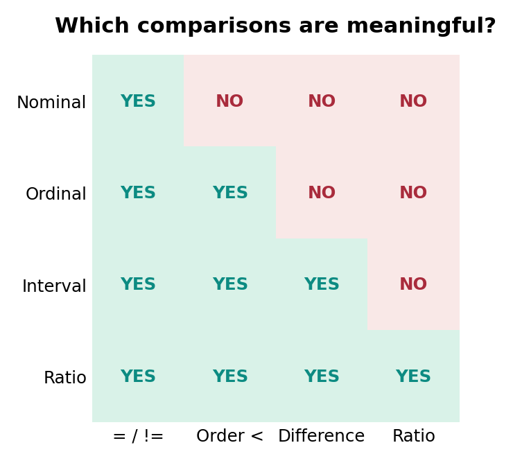
Fig. 11 شکل ۲ـ۳. حداقل عملیاتِ مجاز بر اساس مقیاس: برابری، ترتیب، تفاضل، نسبت. «بله» به معنی امکان مقایسهٔ معنادار است، نه الزام کاربرد آن در همهٔ مسائل. شکل تألیفی.#
مقیاس |
نمونه |
عملیات توصیفی متداول |
خطای رایج |
|---|---|---|---|
اسمی |
کد محصول، شهر |
فراوانی، نما |
میانگینگرفتن از کد شناسه |
ترتیبی |
سطح خدمت، رضایت |
فراوانی، رتبه، میانه |
فرض خودکار فاصلهٔ برابر |
فاصلهای |
دمای سلسیوس |
اختلاف، میانگین، انحراف معیار |
تفسیر نسبت دماها |
نسبتی |
تعداد، جرم، مدت مثبت |
اختلاف، نسبت، میانگین |
بیتوجهی به واحد و دامنهٔ کاربرد |
۲ـ۲ـ۵. گسسته، پیوسته و دودویی#
گسسته (Discrete) یعنی دامنهٔ مقادیر شمارا باشد؛ شمار اقلام نمونهٔ واضح است. پیوسته (Continuous) یعنی مدل نظری بتواند مقدار را از بازهای پیوسته بگیرد، هرچند حسگر با دقت محدود اندازهگیری کند. تردید رایج این است که «اگر وزن را با یک رقم اعشار ثبت کنیم، گسسته میشود؟» پاسخ: دادهٔ ثبتشده گسستهشده است، اما کمیت زیرین میتواند پیوسته باشد. این تمایز بر تفسیر خطا و طراحی نمودار اثر میگذارد.
دودویی (Binary) نوعی ویژگی دوحالتی است. در یک ویژگی دودویی متقارن، هر دو حالت از نظر مسئله مهماند (مانند پاسخ بله/خیر به دو گزینهٔ همارزش). در ویژگی دودویی نامتقارن، حضور ۱ با فقدان ۰ همارزش نیست: در مجموعهای با میلیونها کالا، «این کالا خریداری نشده» برای تقریباً همهٔ اقلام درست است؛ همصفر بودن دو سبد لزوماً شاهد قوی شباهت نیست. در فصل سوم هنگام انتخاب شباهت ژاکارد از همین شهود استفاده میکنیم؛ فعلاً مهم است که تفسیر صفر را در فرهنگ داده ثبت کنیم.

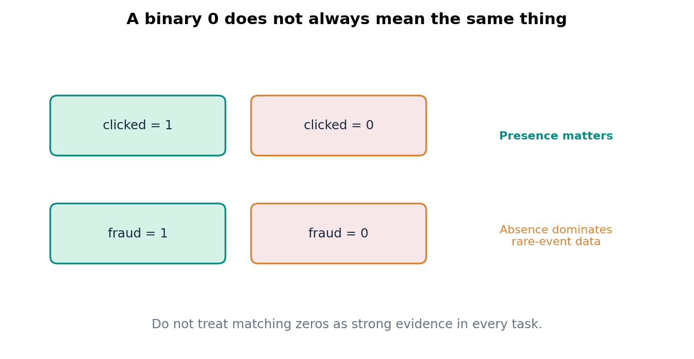
Fig. 12 شکل ۲ـ۴. عدم تقارن معناییِ حضور و عدم حضور یک رخداد کمیاب. در تحلیل اقلام خریداریشده، توافق روی «نخریدن» هزاران کالای نامرتبط نباید نتیجه را تحت تأثیر قرار دهد. شکل تألیفی.#
۲ـ۲ـ۶. ویژگی مشتقشده و نقش زمان#
amount = quantity × unit_price یک ویژگی مشتقشده است. در تحلیل توصیفی همان ردیف قابل استفاده است؛ اما اگر وظیفهٔ پیشبینی amount باشد، استفاده از همین دو جزء میتواند مسئله را بدیهی کند و به معنای کشف الگوی جدید نیست. در تصمیمگیری پیش از خرید، حتی ممکن است یکی از این دو مقدار هنوز در دسترس نباشد. قانون دسترسی در زمان تصمیم، بهاندازهٔ نوع ویژگی مهم است.
زمان نیز صرفاً «یک رشتهٔ متن» نیست. باید منطقهٔ زمانی، دقت اندازهگیری، قرارداد ثبت و نقش زمان مشخص شوند. فرق event_time با ingest_time در ادامه نشان داده میشود.
۲ـ۳. از دادهٔ چندشکلی تا نمایش مناسب برای مسئله#
در فصل اول چهار خانوادهٔ داده را مختصر شناختیم. اکنون بررسی میکنیم چرا همان واقعیت با انتخاب نمایش متفاوت، الگوهای متفاوتی را در دسترس الگوریتم قرار میدهد.

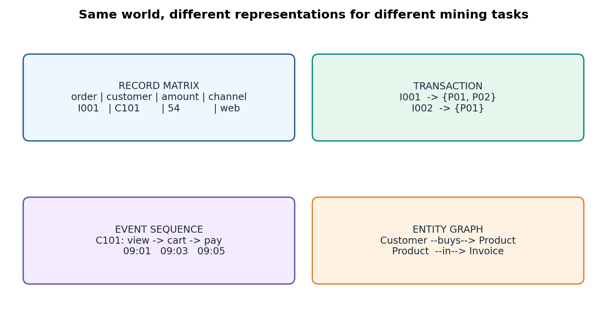
Fig. 13 شکل ۲ـ۵. ماتریس رکوردی، تراکنش مجموعهای، توالی رویداد و گراف ارتباطی. اینها صرفاً قالبهای ذخیرهسازی نیستند؛ هرکدام بخشی از ساختار را حفظ و بخشی را پنهان میکنند. شکل تألیفی.#
۲ـ۳ـ۱. ماتریس ویژگی و جدول رابطهای#
در شکل رایج، \(n\) مشاهده و \(d\) ویژگی را با ماتریس \(X\in\mathbb{R}^{n\times d}\) نمایش میدهیم؛ البته این نمایش فقط زمانی دقیق است که همهٔ ویژگیها عددی و دارای معنای محاسباتی مناسب باشند. یک جدول دارای شناسهٔ مشتری، شهر، زمان و مبلغ، از نظر برنامهنویسی در یک DataFrame جا میگیرد، ولی بدون کدگذاری آگاهانه، یک ماتریس فاصلهپذیر عددی نیست.
در ریاضیِ مدلهای برداری، یک سطر معمولاً یک شیء و ستونها اجزای توصیف آن هستند. اگر دو سطر از دو فاکتور متعلق به یک مشتری باشند، فرض استقلال سطرها در بسیاری از آزمونها بیدلیل است. بنابراین استقلال آماری را نباید از ظاهر جدولی نتیجه گرفت.
۲ـ۳ـ۲. سبد خرید: مجموعه یا چندمجموعه؟#
برای همخریدی میتوان هر فاکتور را به مجموعهٔ کالاهای آن تبدیل کرد:
اگر همان کالا در یک فاکتور با تعداد ۵ خریداری شود، نمایش مجموعهای هنوز فقط حضور آن را نگه میدارد؛ مقدار ۵ حذف شده است. نمایش چندمجموعه (Multiset) یا نگاشت product -> quantity اطلاعات تعداد را حفظ میکند. در نتیجه، باید پیش از کاوش تصمیم بگیریم آیا پرسش «کدام کالاها با هم آمدهاند؟» است یا «چه تعداد از هر کالا همراهِ کالای دیگر خریداری شده است؟». هیچیک ذاتاً درستتر نیست؛ هرکدام پاسخ پرسش متفاوتی میدهد.
۲ـ۳ـ۳. دنبالهٔ رویداد و زمانبندی#
برای هر مشتری ممکن است دنبالهای از رویدادها داشته باشیم:
اگر رویدادهای «مشاهدهٔ کالا، افزودن به سبد، پرداخت» را بدون زمان در یک مجموعه بریزیم، اطلاعات ترتیب از بین میرود. الگوی «مشاهده، سپس خرید» با «خرید، سپس مشاهدهٔ محصول دیگر» یکی نیست. ناهمگونی فاصلههای زمانی هم اهمیت دارد: سه رویداد در ۳۰ ثانیه ممکن است معنای رفتاری متفاوتی از سه رویداد طی یک ماه داشته باشند.
۲ـ۳ـ۴. گراف و رابطهٔ بین موجودیتها#
در مدل گراف \(G=(V,E)\)، گرهها میتوانند مشتری، کالا یا فروشنده باشند و یالها رابطهٔ «خرید»، «بازدید»، یا «معرفی» را نمایش دهند. فروکاستن گراف به یک جدول مستقل از هر گره، همسایگی و مسیرها را حذف میکند. از سوی دیگر، تبدیل هر دادهٔ جدولی به گراف هم لزوماً مفید نیست: اگر رابطهٔ قابل تفسیر نداریم، نمایش گرافی فقط پیچیدگی میافزاید.
۲ـ۳ـ۵. تنکبودن و مسئلهٔ صفر#
اگر هزاران کالای ممکن داشته باشیم و هر سبد فقط چند قلم را شامل شود، ماتریس سبد–کالا عمدتاً صفر است. برای \(n\) سبد و \(p\) کالا، ماتریس دودویی را چنین تعریف میکنیم:
مثال دستی. در سه سبد با چهار کالای \(A,B,C,D\)، اگر سبدها \(\{A,C\}\)، \(\{B\}\) و \(\{A,D\}\) باشند:
از ۱۲ درایه، ۵ مقدار یک داریم؛ چگالی حضور برابر \(5/12\approx0.4167\) و نسبت صفرها \(7/12\approx0.5833\) است. در دادههای بسیار بزرگ، ذخیرهٔ فقط مختصات و مقادیر غیرصفر بهصرفهتر میشود. اما توجه کنید: صفرِ ثبتشده، کالای نخریده، و مقدارِ مشاهدهنشده یکی نیستند. اگر اطلاعات خرید مشتری ناقص باشد، صفر قراردادن جای مقدار نامعلوم میتواند الگوی کاذب بسازد.
۲ـ۴. فرهنگ داده (Data Dictionary) و قرارداد سنجش#
دادهٔ خام حتی اگر از نظر فنی باز شود، بدون فراداده (Metadata) قابل تفسیر مطمئن نیست. برای هر ستون، دستکم نام، شرح، موجودیت مربوط، نقش، نوع معنایی، دامنه، واحد، قواعد مقدار خالی و منشأ ثبت را ثبت میکنیم. برخی فیلدها علاوه بر این به نسخهٔ قرارداد، منبع زمان، یا سیاست ناشناسسازی احتیاج دارند.

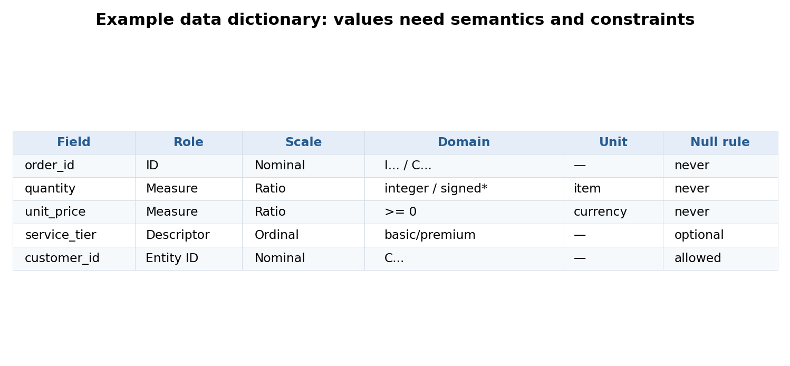
Fig. 14 شکل ۲ـ۶. نمونهٔ سادهٔ فرهنگ داده. قیدِ تعداد منفی، مشروط به وجود «فاکتور برگشت» است؛ بنابراین یک قاعدهٔ عمومیِ بیقید، دادهٔ معتبر را تخریب میکند. شکل تألیفی.#
۲ـ۴ـ۱. دامنهٔ مجاز با قرارداد تجاری فرق دارد#
برای unit_price در مثال آموزشی، قیمت واحد منفی را خطا فرض میکنیم؛ اما در سامانهای دیگر، سطر تخفیف ممکن است با مبلغ منفی ثبت شود و از نظر تجاری معتبر باشد. برای quantity قرارداد واضحتری داریم: در فاکتور فروش عادی، مقدار باید مثبت باشد؛ در فاکتور برگشت که شناسه با C آغاز میشود، تعداد منفی قابل انتظار است. بنابراین قاعدهٔ کیفیت به شکل زیر است:
این رابطه فقط دربارهٔ قرارداد مثال حاضر صادق است. برای دادهٔ واقعی باید از منبع عملیاتی آن تأیید بگیریم. برای فاکتور برگشتی، نمیتوان صرفاً تعداد منفی را به مثبت تبدیل کرد؛ چنین عملی درآمد و فراوانی اقلام را مخدوش میکند.
۲ـ۴ـ۲. دقت ثبت، صحت و واحد#
فرض کنیم حسگری طول را با وضوح ۱ میلیمتر ثبت میکند؛ محاسبهٔ میانگین آن با ۱۲ رقم اعشار، صحت اندازهگیری را بیشتر نمیکند. مفاهیم زیر متفاوتاند:
تفکیکپذیری/دقت نمایش (Resolution): کوچکترین تغییر قابل ثبت؛
تکرارپذیری یا Precision: نزدیکی نتایج تکراری به یکدیگر؛
درستی (Accuracy): نزدیکی اندازهگیری به مقدار حقیقی یا مرجع معتبر؛
سوگیری اندازهگیری (Bias): انحراف سیستماتیک اندازهگیری از مقدار مرجع.
در مدل سادهٔ اندازهگیری، مینویسیم:
که \(\theta\) مقدار واقعی، \(b\) خطای سیستماتیک و \(\varepsilon_i\) مؤلفهٔ تصادفیِ با میانگین صفر در فرض این مدل است. اگر \(\theta=100\)، \(b=+3\) و خطاهای تصادفی در پنج اندازهگیری به ترتیب \([-1,0,1,0,0]\) باشند، مشاهدات \([102,103,104,103,103]\) میشوند. پراکندگی کم است و میانگین دقیقاً ۱۰۳، ولی اندازهگیری سه واحد سوگیری دارد. این مثال نشان میدهد تکرارپذیری بالا مساوی درستی بالا نیست. Tan §۲٫۲٫۱ بر چنین تمایزهایی تأکید دارد.
۲ـ۴ـ۳. زمان رویداد در برابر زمان ورود#
event_time زمانی است که رویداد در جهان عملیاتی اتفاق افتاده؛ ingest_time زمانی است که رکورد به سامانهٔ تحلیلی رسیده است. تأخیر ورود را میتوان به صورت
تعریف کرد، مشروط بر آنکه هر دو زمان با منطقهٔ زمانی سازگار ثبت شده باشند. برای I010، رویداد در ساعت ۱۶:۰۰ و ورود در ساعت ۱۶:۴۰ اتفاق افتاده؛ پس تأخیر ۴۰ دقیقه است. اگر داشبورد رأس ساعت ۱۶:۱۰ ساخته شود، این رویداد هنوز در دادهٔ قابل مشاهده نیست. این «نبودِ مشاهده» را نباید با «فروشنرفتن» یکی گرفت. در دادهکاوی زمانی، برش زمانی واقعی یکی از شروط اعتبار کشف است.

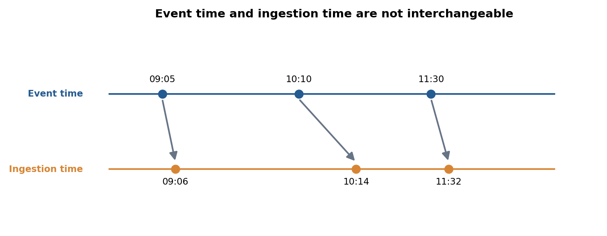
Fig. 15 شکل ۲ـ۷. زمان رویداد و زمان ورود، دو ساعت متفاوت در سامانههای دادهمحورند. بازهٔ بین آنها میتواند به نبودِ موقت رکورد در تحلیل منجر شود. تصویر شماتیک و تألیفی است.#
۲ـ۵. کیفیت داده: «مناسب برای چه استفادهای؟»#
بهجای این جملهٔ کلی که «دادهٔ خوب، دادهٔ بدون خطاست»، پرسش عملیتری مطرح کنیم: این داده برای تصمیم یا کشف مورد نظر تا چه حد قابل اتکاست؟ یک جدول ممکن است برای صدور صورتحساب بهاندازهٔ کافی خوب باشد، ولی برای تحلیل الگوی خرید مشتری فاقد شناسهٔ مشتری باشد؛ یا برای شمارش فروش روزانه مناسب باشد، اما برای پیشبینی لحظهای به دلیل ورود دیرهنگام رویدادها مناسب نباشد. Tan §۲٫۲٫۲ کیفیت را از همین زاویهٔ تناسب با کاربرد مطرح میکند.
۲ـ۵ـ۱. بُعدهای کیفیت و مخرج صحیح#
پنج بُعد کاربردی زیر را جداگانه میسنجیم:
جامعیت (Completeness): چه نسبتی از مقادیر مورد انتظار موجود است؟ برای ستون \(j\):
در مثال، از ۱۴ ردیف، یک customer_id بهصورت ? درج شده است. پس جامعیت آن ستون برابر است با
اما اگر سیاست فروشگاه «خرید مهمان بدون شناسهٔ مشتری» را مجاز بداند، نبود این شناسه همیشه نقص کیفیت برای صدور فاکتور نیست؛ برای تحلیلِ تکرار خرید مشتری ممکن است همچنان یک محدودیت اساسی باشد. در نتیجه حتی مخرجِ جامعیت نیز باید با قواعد کاربرد تنظیم شود.
اعتبار دامنه (Validity): چه نسبتی از مشاهداتِ قابل ارزیابی با قرارداد مجاز هماهنگاند؟ برای قیمت واحد در مثال آموزشی، یک قیمت منفی داریم؛ پس اگر قرارداد unit_price >= 0 باشد:
یکتایی (Uniqueness): آیا کلید تعریفشده برای واحد مشاهده تکرار شده است؟ در این مجموعه، زوج (I008, 1) دوبار وجود دارد. اگر در هر گروه کلیدی فقط یک ردیف را نگه داریم، یک ردیف مازاد از ۱۴ ردیف خام داریم: \(1/14\approx7.14\%\). این نرخ با «نسبت گروههای کلیدی تکراری» یکی نیست: از ۱۳ کلید متمایز، یک گروه تکراری است؛ پس \(1/13\approx7.69\%\). گزارش حرفهای باید نام سنجه و مخرج آن را ذکر کند.
سازگاری (Consistency): آیا دو مقدار که باید از یک قاعده پیروی کنند با هم سازگارند؟ country=IR و country=Iran از نظر رشتهٔ متنی متفاوتاند اما از نظر معنایی در این قرارداد یک کشور را نشان میدهند. سازگاری همچنین میان دو ستون سنجیده میشود؛ مثلاً فاکتور فروش عادی نباید تعداد منفی داشته باشد، یا زمان ورودِ درست و هممنطقهای نباید پیش از زمان رخداد باشد.
بهموقعبودن (Timeliness): آیا داده هنگام تصمیمگیری در دسترس است؟ صرف داشتن ستون تاریخ، بهموقعبودن را اثبات نمیکند. برای سیاست «حداکثر ۱۵ دقیقه تأخیر»، هر رکورد با \(\Delta t>15\) دقیقه علامتگذاری میشود. در فایل نمونه، I010 و I011 به ترتیب ۴۰ و ۲۰ دقیقه تأخیر دارند؛ بنابراین از منظر این قرارداد فرضی، دو رکوردِ قابل محاسبه از ۱۴ ردیف «دیررس» هستند. این یک آستانهٔ آموزشی است، نه SLA تأییدشدهٔ فروشگاه.
درستی (Accuracy): نزدیکی مقدار ثبتشده به واقعیت است و غالباً بدون منبع مستقل، فاکتور اصلی یا تأیید انسانی قابل اندازهگیری مستقیم نیست. اگر unit_price=30 در دامنهٔ معتبر باشد، نمیتوان صرفاً از روی جدول ثابت کرد که قیمت صحیح کالای مربوط همین بوده است. معتبر بودن، معادل درست بودن نیست.

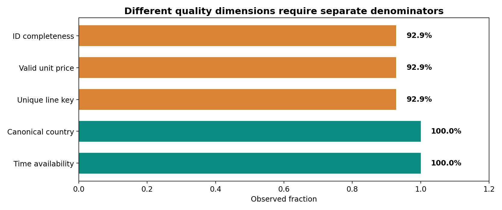
Fig. 16 شکل ۲ـ۸. کارت کیفیت یک مجموعهٔ ساختگی: هر شاخص قرارداد و مخرج خود را دارد. نمودارِ واحد، نه «امتیاز نهایی کیفیت داده» است و نه جانشین قضاوت دربارهٔ کاربرد. شکل تألیفی.#
چرا امتیاز کلی گمراهکننده است؟ میانگینگرفتن ساده از پنج نرخ کیفیت میتواند نقص بحرانی را پنهان کند. مثلاً اگر برای یک تحلیل همخریدی، ۱۰۰٪ ردیفها زمان داشته باشند اما شناسهٔ تراکنش برای نیمی از آنها نباشد، میانگین ۷۵٪ چند معیار هیچچیز دربارهٔ امکان بازسازی سبدها نمیگوید. بهجای یک عدد مستقل از هدف، «حداقل الزامات ورود داده به مسئله» را ثبت میکنیم: وجود کلید فاکتور، قرارداد برگشت، امکان تفکیک خطوط تکراری و تعریفی روشن از تراکنش واجد شرایط.
۲ـ۵ـ۲. مواردِ بیقاعده و مواردِ نامطمئن#
گاهی یک رکورد قطعاً مغایر قرارداد اعلامشده است (مانند quantity=0 در فاکتور عادی در همین مثال). گاهی رکورد صرفاً مشکوک است (مانند قیمت بسیار بزرگ، تعداد خرید غیرمعمول یا تأخیر طولانی). میان این دو تفاوت روششناختی وجود دارد:
تخلف قطعی از قاعدهٔ محلی، یک پرچم اعتبار تولید میکند و مستلزم پیگیری/اصلاح بر اساس سند است.
رخداد بسیار نادر، نامزد بررسی است و حذف خودکار آن ممکن است دقیقاً دادهٔ ارزشمند برای کشف تقلب یا اختلال را نابود کند.
برای مثال در صنعت، یک جریان ۹۰ آمپر میتواند خطای حسگر باشد؛ ولی شاید نشاندهندهٔ اضافهبار واقعی دستگاه باشد. بدون اطلاع از محدودهٔ فیزیکی، کالیبراسیون و همزمانی حسگرهای دیگر، برچسبزدن «خطا» یا «ناهنجاری واقعی» شتابزده است.
۲ـ۶. فقدان مقدار و مکانیزم گمشدن#
فرض کنید customer_id در یک ردیف ? است. اگر با خواندن CSV همان علامت ? را بهعنوان شناسهٔ معتبر بشماریم، همهٔ مشتریان ناشناس زیر یک «مشتری مصنوعی» تجمیع میشوند؛ این میتواند رفتار خرید یک مشتری موهوم بسازد. نخستین اقدام، تعیین کدهای قراردادیِ فقدان مقدار است: ?، رشتهٔ خالی، NA و NULL ممکن است در یک منبع به یک معنا باشند؛ ولی در منبعی دیگر، متن NA شاید نام یک محصول یا کد جغرافیایی باشد. بنابراین تبدیل نشانهها نیز نیازمند فرهنگ داده است.
۲ـ۶ـ۱. چهار حالت که نباید با هم یکی شوند#
میان این موارد فرق بگذارید:
مقدار واقعاً صفر: مشتری در بازهٔ مورد نظر هیچ خریدی نکرده است.
مقدار نامعلوم/ثبتنشده (Missing): نمیدانیم چند بار خرید کرده است.
مقدار نامربوط (Not Applicable): مثلاً «تعداد فرزند» در رکوردی که آن پرسش برایش تعریف نشده؛ بنا به تعریف مسئله ممکن است نامربوط باشد و نباید با صفر جایگزین شود.
مقدار پنهان یا سانسورشده (Censored): میدانیم درآمد بالاتر از یک حد است، ولی رقم دقیق ثبت نشده است؛ این داده فاقد اطلاعات نیست، بلکه اطلاعات بازهای دارد.
پیش از تمیزکردن داده، یک ستون نشانگر برای فقدان مقدار میتواند مفید باشد:
با این تعریف، نرخ فقدان در ستون \(j\) برابر \(1-\frac1n\sum_i R_{ij}\) خواهد بود؛ البته اگر برای همهٔ \(n\) ردیف، مقدار آن ستون مورد انتظار باشد. اگر بعضی سطرها ذاتاً به این ویژگی مربوط نیستند، تعریف مخرج باید اصلاح شود.
۲ـ۶ـ۲. الگوی قابل مشاهده با علت فقدان یکی نیست#

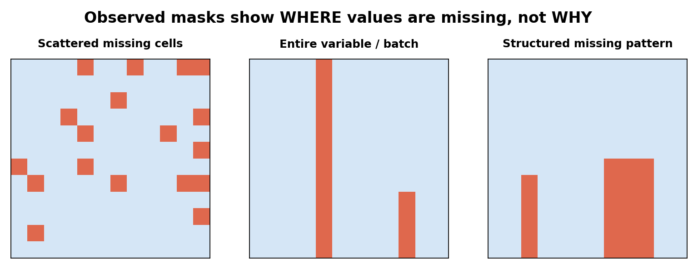
Fig. 17 شکل ۲ـ۹. سه الگوی ظاهریِ فقدان مقدار: پراکنده، ستون/بازهٔ کامل و ساختاریافته. مربعهای نارنجی دادهٔ گمشدهاند. از روی این تصویر بهتنهایی نمیتوان MCAR، MAR یا MNAR بودن را نتیجه گرفت. شکل تألیفی.#
در ادبیات دادهٔ گمشده، سه مفهوم رایج وجود دارد؛ این بخش با استفاده از منبع تکمیلی Statistical Consulting Centre, University of Melbourne و مقالهٔ «Missing data: A statistical framework for practice» توضیح داده شده است. این مبحث، فراتر از تعریف توصیفی فقدان در دو کتاب اصلی، برای ارزیابی اعتبار تحلیل آورده شده است.
MCAR (Missing Completely At Random): احتمال گمشدن به مقادیر مشاهدهشده یا مشاهدهنشدهٔ داده وابسته نیست. مثال مفهومی: تعدادی فرم به علت خرابی تصادفیِ مستقل از پاسخها از بین رفتهاند. در عمل، مستقلبودن واقعی باید سنجیده/توجیه شود؛ ظاهر تصادفی کافی نیست.
MAR (Missing At Random): پس از شرطیکردن بر متغیرهای مشاهدهشده، احتمال گمشدن به مقدارِ غایب وابسته نیست. مثلاً نرخ پاسخندادن به یک سؤال ممکن است به گروه سنیِ ثبتشده وابسته باشد، ولی پس از کنترل گروه سنی دیگر به پاسخ ثبتنشده وابسته نباشد. نام «تصادفی» در MAR به معنی بیارتباط بودن فقدان با همهٔ دادهها نیست.
MNAR (Missing Not At Random): حتی پس از شرطیکردن بر اطلاعات مشاهدهشده، مکانیزم فقدان میتواند به خود مقدارِ غایب وابسته باشد. مثال: سنسور بالاتر از آستانهٔ فنی قادر به ثبت عدد نیست، یا افراد دارای مقدار بسیار بالای یک ویژگی کمتر آن را اعلام میکنند.
بهصورت نمادین، اگر \(R\) نشانگر مشاهدهشدن، \(X_{\rm obs}\) دادهٔ مشاهدهشده و \(X_{\rm mis}\) دادهٔ غایب باشد، در مدل مفهومی:
این روابط در سطح مدل مکانیزم فقدان و با تعریف دقیق مجموعهٔ متغیرها تفسیر میشوند. مکانیزم واقعی را عموماً نمیتوان فقط از دادهٔ مشاهدهشده با قطعیت تعیین کرد. بنابراین در تحلیل جدی، فرض فقدان باید ذکر شود و حساسیت نتیجه نسبت به فرضهای جایگزین بررسی شود.
۲ـ۶ـ۳. مثال عددی: حذفِ ظاهراً ساده چه خطایی میسازد؟#
فرض کنید مقدار واقعی خریدِ هشت مشتری در یک بازه به شکل زیر باشد:
میانگینِ تمام جامعهٔ کوچک ما:
اکنون فرض کنیم به دلیلی که در طراحی مثال میدانیم، فقط چهار مقدار بزرگ و یکی از چهار مقدار کوچک ثبت شده باشد. مقدارهای قابل مشاهده [100,100,100,100,10] و میانگین آنها:
فقط با کنارگذاشتن سه مقدار گمشده، میانگین از ۵۵ به ۸۲ رسیده است؛ افزایشی برابر \(27/55\approx49.1\%\) نسبت به مقدار کامل. این مثال یک سناریوی انتخاب غیریکسانِ مشاهدات را نشان میدهد، نه ادعای تشخیص مکانیزم در دادهٔ واقعی.

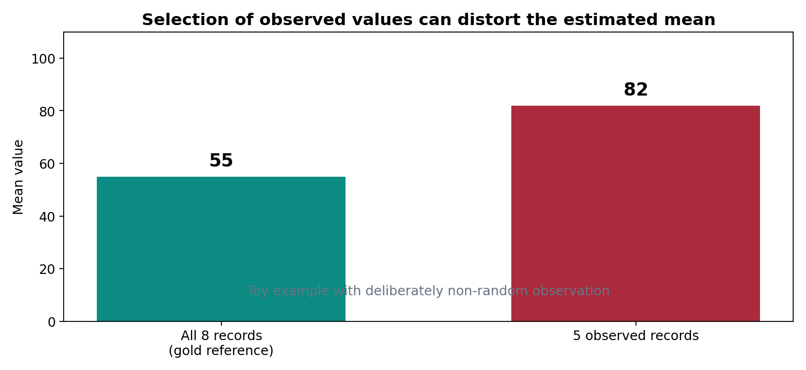
Fig. 18 شکل ۲ـ۱۰. میانگین کامل و میانگینِ موارد مشاهدهشده در مثال ساختگی. مقدار بیشترِ میانگینِ مشاهدهشده الزاماً رشد واقعی خرید را نشان نمیدهد. شکل تألیفی.#
در این مرحله نباید دستور کلی «تمام مقادیر خالی را با میانگین جایگزین کن» داد. چنین تصمیمی به نوع متغیر، مکانیزم محتمل فقدان، هدف تحلیل، ساختار گروهها و طرح ارزیابی وابسته است. در فصل چهارم، روشهای اصلاح و ارزیابی این مسئله را جداگانه مطالعه میکنیم.
۲ـ۷. توصیف توزیع قبل از کشف الگو#
شناسایی داده با آمار توصیفی آغاز میشود، اما نباید آن را با مدلسازی پیشبینی یکی گرفت. هدف ما این است که محدوده، تمرکز، پراکندگی و موارد غیرمعمول را با حداقل فرض بشناسیم. Han §۲٫۲ مرکز و پراکندگی، چندکها، نمایشهای گرافیکی و همبستگی را به این منظور معرفی میکند. اینجا بر ابزارهایی تمرکز میکنیم که برای تشخیص کیفیت و تفسیر داده مهماند.
۲ـ۷ـ۱. میانگین، میانه و نما: سه سؤال متفاوت#
برای مقادیر عددی \(x_1,\ldots,x_n\):
میانگین مرکز حسابی و برای دادههای حساس به جمع مناسب است؛ میانه (Median) نقطهای است که نیمی از دادهها در هر سو قرار میگیرند و در برابر یک مقدار بسیار بزرگ مقاومتر است؛ نما (Mode) پرتکرارترین مقدار است و حتی برای دادهٔ اسمی معنا دارد.
یک حسگر شش اندازهگیری ثبت کرده است:
محاسبهٔ دستی میانگین:
دو مقدار میانی ۱۲ و ۱۳ هستند؛ پس
اختلاف ۲۵ و ۱۲٫۵ نشانهای از عدم تقارن شدید و اثر اندازهگیری ۹۰ است، اما بهتنهایی اثبات خطای حسگر نیست. در این داده هیچ نمای یکتایی وجود ندارد، زیرا همهٔ مقادیر یکبار ظاهر شدهاند.
۲ـ۷ـ۲. واریانس و تفاوت جامعه و نمونه#
اگر شش مشاهده تمام جامعهٔ مورد مطالعه باشند، واریانس توصیفی جامعه:
در مثال، انحراف از ۲۵ برابر [-15,-14,-13,-12,-11,+65] است؛ مجموع مربعات:
بنابراین \(\sigma^2=5080/6\approx846.67\) و \(\sigma\approx29.10\) میشود. اگر این شش مقدار نمونهای تصادفی و مناسب از جامعهٔ بزرگتر باشند و قصد برآورد واریانس جامعه را داشته باشیم، از واریانس نمونهای با مخرج \(n-1\) استفاده میکنیم:
فرق مخرجها یک قرارداد کاملاً بیدلیل نیست؛ به هدف توصیف مجموعهٔ حاضر یا برآورد پارامتر جامعه مربوط است. با وجود این، اگر نمونه بهطور گزینشی جمعآوری شده باشد، استفاده از \(n-1\) سوگیری ناشی از شیوهٔ انتخاب نمونه را رفع نمیکند.
۲ـ۷ـ۳. چارک، فاصلهٔ میانچارکی و «پرچم» دادهٔ پرت#
برای نمونههای کوچک، چند تعریف معتبر از چارک وجود دارد که ممکن است اعداد کمی متفاوت بدهند. برای شفافیت این جزوه، در مثال ششتایی از روش میانهٔ دو نیمهٔ مرتب (Tukey’s hinges / median of halves) استفاده میکنیم. نیمهٔ پایین [10,11,12] و نیمهٔ بالا [13,14,90] است. بنابراین:
فاصلهٔ میانچارکی \(\mathrm{IQR}=Q_3-Q_1=3\) است. در قاعدهٔ تصویری رایج جعبهنمودار، حد بالای هشدار \(Q_3+1.5\,\mathrm{IQR}=14+4.5=18.5\) خواهد بود؛ عدد ۹۰ از این حد فراتر است. این قاعده آزمون اثباتی خطا نیست و برای توزیعهای بسیار چوله یا دادههای دُمسنگین میتواند نقاط معتبر زیادی را علامت بزند. آستانهٔ مناسب باید با هدف و نوع توزیع تنظیم شود.

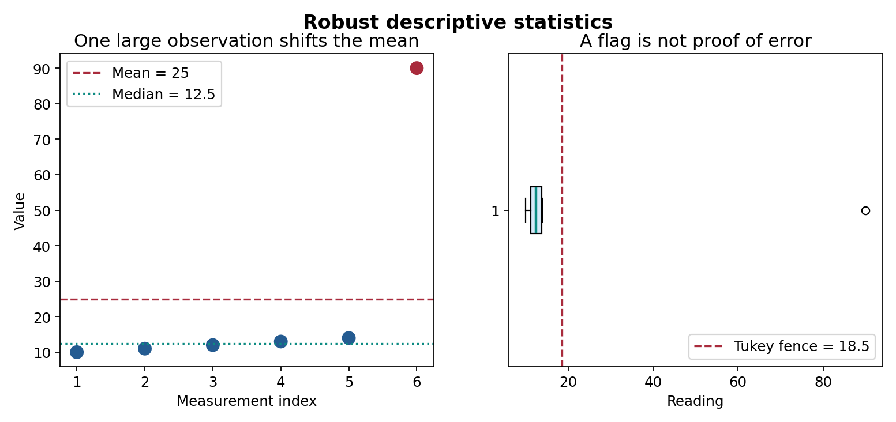
Fig. 19 شکل ۲ـ۱۱. مقایسهٔ میانگین، میانه و پرچم جعبهنمودار در شش اندازهگیری ساختگی. مقدار ۹۰ باید بررسی شود؛ از روی شکل نمیتوان آن را حذف کرد. شکل تألیفی.#
۲ـ۷ـ۴. خلاصهٔ مقاوم جایگزینِ توضیح داده نمیشود#
اگر فقط میانه را گزارش کنیم و عدد ۹۰ را نادیده بگیریم، ممکن است ناهنجاری مهمی را از دست بدهیم. گزارش خوب دستکم شامل تعداد مشاهده، نسبت فقدان، دامنه، میانه، چارکها، میانگین و توضیح پرچمها است. برای متغیر اسمی، به جای این مجموعه از شمارش دستهها، درصد و تغییر فراوانی در زمان استفاده میکنیم. برای زمان، علاوه بر فاصلهٔ زمانی، گپِ ثبت و دیررسی رکوردها مهم است.
۲ـ۷ـ۵. چرا نمودار لازم است؟#
مجموعههایی با میانگین و واریانس مشابه ممکن است توزیع و روابط بسیار متفاوت داشته باشند. نمودار فراوانی، جعبهنمودار و نمودار پراکنش ابزار کنترل فرض هستند، نه تزئین جزوه. انتخاب نمودار باید با نوع داده سازگار باشد: برای ردهٔ اسمی نمودار میلهای و جدول فراوانی روشنتر از منحنی پیوسته است؛ برای مقدار زمانی، خط زمان و نمودار سری زمانی اطلاعاتی دربارهٔ ترتیب و فاصلههای ثبت آشکار میکنند؛ برای سبد کالا، نمودار رخداد و ماتریس دودویی آموزنده است.
۲ـ۸. خطای ثبت، دادهٔ پرت، و موجودیت تکراری#
۲ـ۸ـ۱. تفاوت دادهٔ پرت با دادهٔ نامعتبر#
یک مشاهده ممکن است نادر باشد اما معتبر؛ مثلاً خرید عمدهٔ هزار قلم کالا توسط یک شرکت. یک مشاهدهٔ معمولی هم ممکن است نامعتبر باشد؛ مثلاً قیمت ۱۲ به جای ۱۲٫۵ با خطای تایپ. پس «پرت» مفهوم آماری/زمینهای است و «نامعتبر» مفهوم قراردادی/عملیاتی. از دید دادهکاوی، حذف همهٔ نقاط دورافتاده میتواند هدف کشف ناهنجاری را از بین ببرد.
یک مسیر تصمیمگیری بهتر چنین است: ابتدا دامنهٔ مجاز و قرارداد را کنترل کنیم؛ سپس با آمار و قواعد زمینهای، نقاط مشکوک را علامت بزنیم؛ سپس در صورت امکان از منبع معتبر، سوابق دستگاه یا کارشناس حوزه تأیید بگیریم؛ در نهایت نسخهٔ خام و نسخهٔ اصلاحشده را هر دو نگه داریم.
۲ـ۸ـ۲. رکورد تکراری، موجودیت تکراری و تراکنشِ چندردیفی#
در فایل نمونهٔ فصل، I001 دو ردیف مختلف دارد؛ تکرار شناسهٔ فاکتور تکرار رکورد نیست. برای تشخیص تکرار خط، کلید (order_id,line_no) را بهکار میگیریم. دو ردیف با این کلید و مقادیر دقیقاً یکسان میتوانند ناشی از ثبت دوبارهٔ پیام باشند؛ ولی اگر مقادیر متفاوت باشند، تعارض نسخهای یا اصلاح عملیاتی نیز محتمل است و نباید یکی را دلخواه حذف کرد.

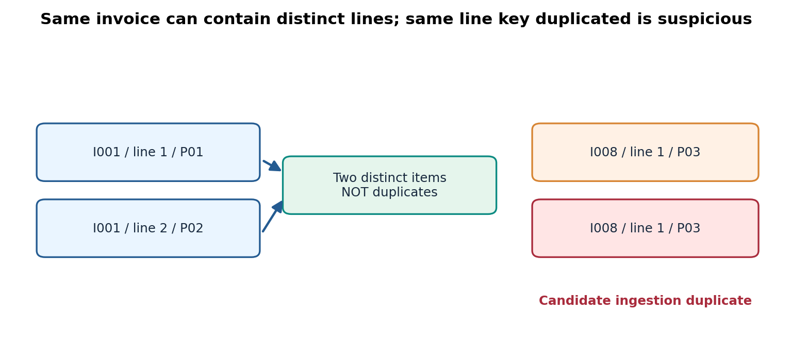
Fig. 20 شکل ۲ـ۱۲. دو ردیف معتبر در فاکتور I001 در برابر تکرار مشکوک همان ردیف I008. تعریف کلید یکتایی تابع واحد مشاهده است. شکل تألیفی.#
مثال اثر بر استخراج قواعد: فرض کنید برای هر سبد یک مجموعهٔ کالا میسازیم. اگر ردیف دو بار دریافتشدهٔ I008 را دو فاکتور جدا در نظر بگیریم، تعداد کل تراکنشها بیدلیل زیاد میشود و فراوانی کالای P03 بیشبرآورد میشود. اگر فقط در همان سبد حضور/عدم حضور را حساب کنیم، درج دوبارهٔ P03 ممکن است در نمایش مجموعهای پنهان شود؛ اما در محاسبهٔ مبلغ فروش یا تعداد، خطا همچنان باقی میماند. انتخاب نمایش میتواند برخی خطاها را پنهان کند؛ نه اینکه آنها را رفع کرده باشد.
۲ـ۸ـ۳. ناسازگاری معنایی و چند منبع داده#
وقتی دو سامانه یکی «ایران» و دیگری IR مینویسد، استانداردسازی بر اساس یک جدول نگاشت ممکن است مفید باشد. اما یکسانسازی نام شهر، کشور، محصول یا واحد باید با نسخهٔ مرجع و قلمرو زمانی مشخص انجام شود. نام کالا با گذشت زمان تغییر میکند؛ دو کالا میتوانند عنوان یکسان ولی شناسهٔ متفاوت داشته باشند. بنابراین نام شبیه، به معنای موجودیت یکسان نیست. در دادههای چندمنبعی، منشأ (Provenance) و شناسهٔ پایدار از ابزارهای مهم کنترل کیفیتاند.
۲ـ۹. ترکیب گروهها و وارونگی نتیجه: مثال Simpson#
یکی از خطرهای بنیادی در تحلیل داده، جمعکردن زیرگروههایی است که نرخ وقوع و ترکیب آنها متفاوت است. برای روشنشدن مسئله، دو سامانهٔ آموزشی A و B را در دو گروه «آسان» و «دشوار» مقایسه میکنیم. همهٔ شمارشها ساختگیاند و فقط برای استدلال ریاضی استفاده میشوند.
گروه |
A: موفق/کل |
نرخ A |
B: موفق/کل |
نرخ B |
|---|---|---|---|---|
آسان |
\(9/10\) |
\(90\%\) |
\(72/90\) |
\(80\%\) |
دشوار |
\(18/90\) |
\(20\%\) |
\(1/10\) |
\(10\%\) |
تجمیعی |
\(27/100\) |
\(27\%\) |
\(73/100\) |
\(73\%\) |
محاسبهٔ دستی مرحلهبهمرحله. در گروه آسان A بهتر است، زیرا \(0.9>0.8\)؛ در گروه دشوار نیز A بهتر است، زیرا \(0.2>0.1\). اما اگر همهٔ نمونهها را بدون توجه به گروه درهم بریزیم، نرخ A برابر \((9+18)/(10+90)=27/100\) و نرخ B برابر \((72+1)/(90+10)=73/100\) میشود. ظاهراً برتری کاملاً معکوس شده است!

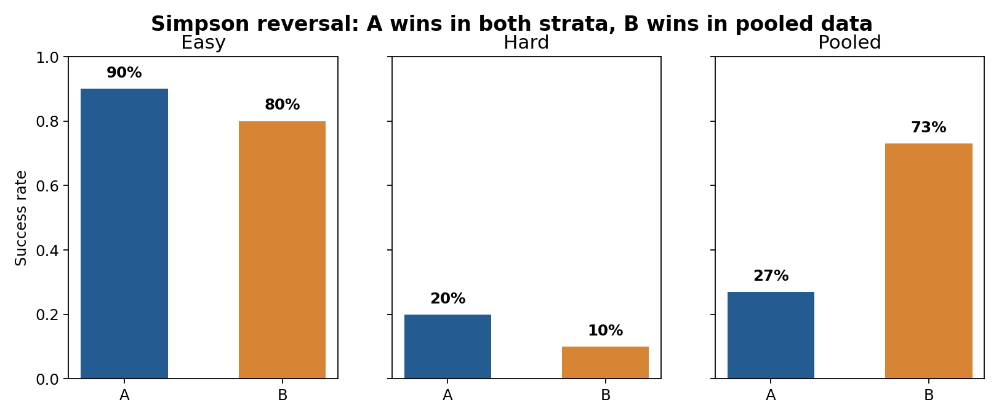
Fig. 21 شکل ۲ـ۱۳. وارونگی Simpson: A در هر زیرگروه بهتر است؛ ولی ترکیب نامتوازن گروههای آسان و دشوار باعث میشود B در کل بهتر دیده شود. شکل تألیفی.#
دلیل، تفاوت وزن گروهها است. اگر \(r_{g,s}\) نرخ موفقیت سامانهٔ \(g\) در زیرگروه \(s\) و \(w_{g,s}=n_{g,s}/n_g\) وزن همان زیرگروه در سامانهٔ \(g\) باشد، آنگاه:
برای A سهم گروه دشوار \(90\%\) و برای B سهم گروه دشوار فقط \(10\%\) است. پس با وزنهای متفاوت، مقایسهٔ نرخهای خام بیانگر یک مقایسهٔ همشرایط نیست. این پدیده نشان میدهد «توزیع نمونه در گروهها» جزء اطلاعات ضروری کیفیت تحلیل است. از این مثال نباید نتیجهٔ علّی گرفت: حتی تحلیل طبقهبندیشده نیز بدون طرح مطالعه و کنترل عوامل مخدوشکننده اثبات نمیکند که A علت موفقیت بیشتر بوده است.
پیوند به دادهکاوی: وقتی قواعد انجمنی را در همهٔ شعب یک فروشگاه با هم استخراج میکنیم، یک قاعدهٔ ظاهراً قوی ممکن است از تفاوت ترکیب شعبهها، فصلها یا گروههای مشتری ناشی شده باشد. پیش از تفسیر قاعده، باید دید آیا الگو در زیرگروههای مرتبط نیز پایدار است.
۲ـ۱۰. از کیفیت داده تا کیفیت ادعا: هشدار نشت اطلاعات#
در فصل اول دیدیم که وقتی الگوهای زیادی را امتحان میکنیم، کشفیات کاذب ممکناند. کیفیت داده میتواند از مسیر دیگری نیز نتیجه را فریب دهد: نشت اطلاعات (Data Leakage). فرض کنید میخواهیم ساعت ۱۰ صبح احتمال بازگشت کالا را پیشبینی کنیم، اما ویژگی refund_processed_at فقط پس از بازگشت کالا ایجاد میشود. اگر این ستون در مدل باشد، دقت ارزیابی روی دادههای تاریخی ظاهراً عالی میشود؛ ولی در زمان تصمیمگیری آن اطلاعات وجود ندارد.
نشت فقط از متغیر پاسخ مستقیم نیست. اگر میانگین، فراوانی دستهها یا آمار جایگذاری مقدار گمشده را قبل از تقسیم آموزش/آزمون از تمام مجموعه برآورد کنیم، بخش آزمون بر فرایند یادگیری اثر گذاشته است. راهبرد درست در مسئلهٔ پیشبینی، محاسبهٔ پارامترهای پیشپردازش فقط بر دادهٔ آموزش و سپس اعمال همان تبدیل روی دادهٔ آزمون است؛ مستندات رسمی scikit-learn این خطا را با مثال توضیح میدهد. این بحث یک هشدار روششناختی است؛ جزئیات پیادهسازی Pipeline در فصلهای بعد میآید.
برای کاوش الگوهای توصیفی نیز باید معلوم کنیم داده به چه دورهٔ زمانی و چه جامعهای تعلق دارد، تغییر تعریف رویداد در نیمهٔ دوره رخ داده یا نه، و آیا کیفیت ثبت در زیرگروهها یکسان است. بدون اینها، الگوی استخراجشده ممکن است فقط «اثر سامانهٔ ثبت» باشد، نه رفتار واقعی پدیده.
۲ـ۱۱. یک فرایند ممیزی قابل دفاع و تکرارپذیر#
هدف ممیزی (Audit) پاککردن بیسروصدای داده نیست. ممیزی ابتدا اطلاعات دربارهٔ داده تولید میکند. خروجی آن باید شامل نسخهٔ دادهٔ خام، قواعد، شمار موارد بررسیشده، ردیفهای مشکوک، تصمیمهای مستند و محدودیتهای باقیمانده باشد.

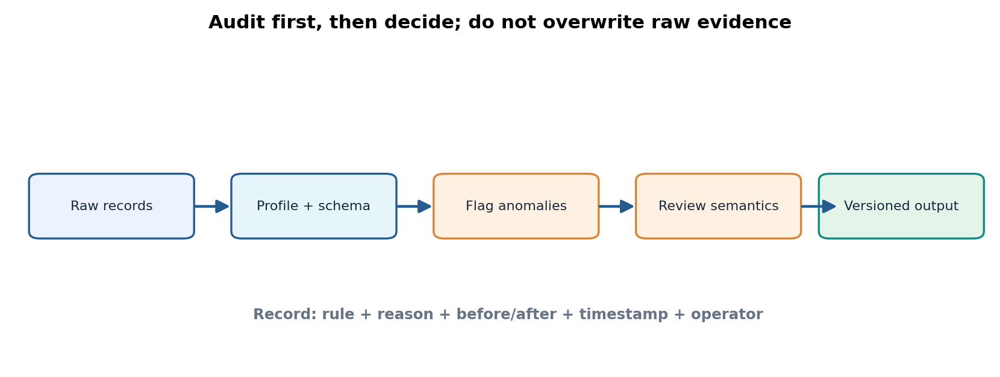
Fig. 22 شکل ۲ـ۱۴. جریان پیشنهادی ممیزی کیفیت: نگهداری دادهٔ خام، شناسایی قاعدهمحور، بازبینی معنایی و تولید نسخهٔ خروجیِ دارای سابقهٔ تغییر. شکل تألیفی.#
۲ـ۱۱ـ۱. مراحل الگوریتمی ممیزی#
برای مجموعهدادهٔ \(D\) و فرهنگ دادهٔ \(S\)، یک شبهکد ساده چنین است:
INPUT: Raw records D, schema and business rules S
OUTPUT: Audit report A, normalized view N, quarantined flags F
1. Preserve D unchanged; record source, version, and checksum.
2. Parse each column with explicit data types and null tokens.
3. For each row:
a. Normalize harmless, documented representations in N.
b. Check domain and cross-field constraints from S.
c. Flag violations without deleting original evidence.
4. Group by the business key defined for the observation grain.
5. Distinguish identical duplicate messages from legitimate multi-line orders.
6. Compute missingness, validity, uniqueness, and latency separately.
7. Report denominators, unresolved cases, and the chosen analysis population.
8. Export A, N, F with versioned names; require review for destructive fixes.
پیچیدگی زمانی اسکن هر سطر با تعداد ثابت قواعد تقریباً \(O(n)\) است؛ اگر یکتایی با جدول درهمسازی (Hash Table) کنترل شود، زمان مورد انتظار آن نیز \(O(n)\) است، ولی در حالت بد یا پیادهسازیهای دیگر ممکن است تفاوت کند. حافظهٔ لازم برای نگهداری کلیدهای متمایز متناسب با تعداد کلیدهاست. برای دادههای بسیار بزرگ، همین نکته زمینهٔ ورود به الگوریتمهای جریانداده و مقیاسپذیری است.
۲ـ۱۱ـ۲. آیا نرمالکردن هر مقدار مجاز است؟#
تبدیل Web به web و Iran به IR در این مثال، بر اساس قرارداد از پیش تعیینشده، معنای شناختهشده را حفظ میکند و یک نمای استاندارد میسازد؛ بااینحال فایل خام را دستنخورده نگه میداریم. در مقابل، تغییر خودکار قیمت منفی به قدرمطلق آن مجاز نیست؛ ممکن است تعریف قیمت را تغییر دهد یا خطای ورود را پنهان کند. همچنین quantity=0 را نمیتوان خودکار به ۱ تبدیل کرد. تفاوت «یکسانسازی نمایش» با «حدس زدن مقدار واقعی» باید در کد و گزارش آشکار باشد.
۲ـ۱۱ـ۳. آستانههای کنترل کیفیت را به مسئله متصل کنید#
یک نمونهٔ معیار ورود به تحلیل قواعد انجمنی میتواند چنین باشد: هر ردیف باید شناسهٔ فاکتور و محصول داشته باشد؛ هر فاکتور باید از نظر تعلق خطوط به یک تراکنش قابل بازسازی باشد؛ برگشتها از فروشهای عادی تفکیک شوند؛ و منشأ داده و دورهٔ زمانی روشن باشد. در مسئلهٔ تحلیل تأخیر تحویل، همین قواعد کافی نیستند؛ زمان سفارش، زمان ارسال، زمان تحویل، زمان لغو و منطقهٔ زمانی حیاتی میشوند. بنابراین قرارداد کیفیت برای مسئله تعریف میشود، نه یک نسخهٔ عمومی برای همهٔ تحلیلها.
۲ـ۱۲. رابطهٔ میان ویژگیها: رابطهٔ آماری، نه الزاماً رابطهٔ علّی#
در آمار توصیفی تکمتغیره، یک ستون را بهتنهایی بررسی کردیم. بسیاری از خطاهای کیفیت و الگوهای پنهان، میان دو یا چند ویژگی آشکار میشوند: مثلاً قیمت هر قلم با نوع محصول مرتبط است، زمان تحویل با روش ارسال رابطه دارد، یا نرخ فقدان یک فیلد در یکی از شعب بیشتر است. از مباحث Han §۲٫۲٫۳ تنها پایههای ضروری را اینجا میآوریم؛ سنجههای شباهت و فاصله بین اشیای داده را در فصل سوم جداگانه آموزش خواهیم داد.
۲ـ۱۲ـ۱. کوواریانس و واحد اندازهگیری#
برای دو ویژگی عددی \(X\) و \(Y\)، کوواریانس توصیفی جامعه برابر است با
علامت مثبت یعنی انحرافها از میانگین معمولاً همجهتاند؛ علامت منفی یعنی معمولاً خلافجهتاند. بزرگی آن به واحد دو متغیر وابسته است.
مثال دستی. سه زوج \((1,2)\)، \((2,4)\) و \((3,6)\) را در نظر بگیرید. میانگینها \(\bar x=2\) و \(\bar y=4\) هستند. حاصلضرب انحرافها به ترتیب \((-1)(-2)=2\)، \(0(0)=0\) و \((1)(2)=2\) است؛ پس
اگر واحدِ \(Y\) را عوض کنیم و همهٔ مقدارهای آن در ۱۰۰ ضرب شوند، کوواریانس ۱۰۰ برابر میشود؛ این تغییر الزاماً افزایش وابستگی واقعی نیست.
۲ـ۱۲ـ۲. ضریب همبستگی و محدودیت تفسیر#
برای انحراف معیارهای مثبت \(\sigma_X,\sigma_Y\)، ضریب همبستگی پیرسون
بیواحد است. در مثال بالا \(\sigma_X=\sqrt{2/3}\) و \(\sigma_Y=\sqrt{8/3}\)؛ حاصلضرب آنها \(4/3\) است، در نتیجه \(\rho=1\). این مقدار فقط رابطهٔ خطی کامل در همان سه زوج را نشان میدهد. معنی آن این نیست که X علت Y است یا هر رابطهٔ غیرخطی نیز کشف شده است. برای متغیر اسمی اصلاً محاسبهٔ مستقیم پیرسون روی کدهای دلخواه رویکرد مناسبی نیست؛ باید به جدول توافقی، نسبتهای شرطی یا سنجههای متناسب با نوع داده مراجعه کرد.
۲ـ۱۲ـ۳. جدول توافقی برای متغیرهای اسمی#
برای دو متغیر اسمی، مثلاً channel ∈ {web, app} و service_tier ∈ {basic, premium}، ابتدا شمارش \(n_{ab}\) در هر ترکیب را محاسبه میکنیم. نسبت شرطی
با شرط مثبتبودن مخرج معنا دارد. این نسبت توصیفی، زمینهٔ تحلیل وابستگی و الگوی انجمنی است؛ ولی برای نمونهٔ کوچک فاصلهٔ عدمقطعیت و برای جستوجوی صدها رابطه، مسئلهٔ آزمونهای چندگانه باید در نظر گرفته شود. از این منظر، یک جدول توافقی خوب نخستین گام ممیزی یک ادعای کشفشده است، نه پایان پژوهش.
۲ـ۱۳. تمرین عملی: بازتولید همهٔ محاسبات با پایتون#
در downloads/ سه فایل اصلی آماده است: retail_lines_synthetic.csv، measurements_synthetic.csv و chapter02_examples.py. همهٔ دادهها آموزشی و ساختگی هستند. برنامهٔ پایه تنها از کتابخانهٔ استاندارد پایتون استفاده میکند، تا در رایانهٔ منزل، دانشگاه یا محیط آموزشی بدون نصب بستهٔ خاصی اجرا شود:
python chapter02_examples.py
در ویندوز، از داخل پوشهٔ downloads میتوانید روی RUN_CHAPTER02_EXAMPLES.cmd نیز دوبار کلیک کنید. دفترچهٔ chapter02_examples.ipynb همان محاسبات را مرحلهبهمرحله ارائه میدهد. چون محاسبات از خود CSV خوانده میشوند، میتوان با تغییر کنترلشدهٔ یک رکورد دید گزارش چگونه عوض میشود.
۲ـ۱۳ـ۱. تفسیر خروجی ممیزی#
خروجی مورد انتظار در فایل اصلی تقریباً به صورت زیر است (ترتیب نمایش مجموعهٔ کالاها ممکن است بین اجراها فرق کند):
line count: 14
distinct order IDs: 12
customer ID missing: 1
customer ID completeness: 92.86%
duplicate line keys: [('I008', '1')]
rule violations: [('I005', 'zero_quantity'),
('I006', 'negative_unit_price')]
measurement mean: 25.0
measurement median: 12.5
Q1 = 11.0, Q3 = 14.0, IQR = 3.0
upper fence = 18.5, suspect = [90.0]
Simpson / easy: A = 0.90, B = 0.80
Simpson / hard: A = 0.20, B = 0.10
Simpson / pooled: A = 0.27, B = 0.73
full mean = 55; observed mean = 82
چگونه یک ردیف نامعتبر را مدیریت کردیم؟ برنامه فقط ردیف دارای قیمت منفی را علامت میزند؛ تصمیمِ «قیمت صحیح چند بوده» نمیگیرد. همچنین I008 را هنگام تشکیل نمای مجموعهای سبدها با کلید (order_id,line_no) یکبار میشمارد. این عمل به معنای اصلاح دائمی فایل خام نیست. برای فاکتور برگشت C009، مقدار منفیِ تعداد را مطابق قرارداد معتبر تلقی میکند، ولی آن را وارد مجموعهٔ تراکنشهای فروش عادی برای قاعدهٔ همخریدی نمیکند. مقدار گمشدهٔ مشتری نیز در خروجی ممیزی صفر یا یک شناسهٔ مصنوعی نمیشود.
۲ـ۱۳ـ۲. آزمایشهای پیشنهادی با تغییر داده#
ابتدا یک نسخه از CSV بردارید. سپس: I008 تکراری را حذف کنید و مشاهده کنید تعداد ردیف از ۱۴ به ۱۳ تغییر میکند ولی تعداد شناسههای سفارش ۱۲ باقی میماند؛ unit_price=-15 را به یک مقدار تأییدشدهٔ مثبت تغییر دهید و ببینید هشدار مربوط حذف میشود؛ C009 را به اشتباه I009 نامگذاری کنید تا اثر از دست رفتن معنای «برگشت» را دریابید؛ و سرانجام زمان ورود I010 را به ۱۶:۰۵ اصلاح کنید تا تأخیر ثبت از ۴۰ دقیقه به ۵ دقیقه برسد. هر تغییر باید در نسخهٔ آزمایشی باشد، نه در فایل مرجعِ خام.
۲ـ۱۴. پیوند با دادهٔ واقعی: چه چیزی را از UCI میتوان آموخت؟#
برای گذر از مثال کوچک به دادهٔ واقعی، مجموعهٔ Online Retail II در UCI یک مطالعهٔ موردی مناسب است: طبق صفحهٔ رسمی، بیش از یک میلیون رکورد تراکنشی در دورهٔ ۲۰۰۹ تا ۲۰۱۱ دارد، چند نوع ویژگی زمانی، شناسهای و عددی را دربرمیگیرد و وجود مقادیر گمشده در فرادادهٔ آن گزارش شده است. قرارداد InvoiceNo و نشانهٔ آغازین C برای ابطال/برگشت فاکتور نیز در شرح مجموعه آمده است. اینها واقعیات مستندِ معرفی مجموعهداده هستند، نه ادعای اینکه فایل کوچک آموزشی ما نمونهٔ استخراجشده از UCI است.
پیوند مجموعهداده: UCI Online Retail II؛ شناسهٔ ارجاع: DOI 10.24432/C5CG6D. صفحهٔ رسمی برای مجموعهداده مجوز CC BY 4.0 درج کرده است. فایل کامل واقعی داخل ZIP این فصل قرار نگرفته تا بسته حجیم و وابسته به شبکه نشود؛ در عوض downloads/profile_uci_retail_ii.py برای تحلیل اختیاری فایل محلی Excel پس از دریافت از منبع رسمی ارائه شده است. این فایل با وضعیتهای رایج نامگذاری ستونها و چند برگه سازگار است، ولی نتایج آن را باید بر نسخهٔ دریافتشده کنترل کرد.
سؤالات پژوهشی برای دادهٔ واقعی: آیا یک شناسهٔ فاکتور در چند ردیف کالا آمده و چرا؟ آیا ردیفهای برگشت را باید از سبدهای فروش حذف کرد یا بهعنوان رویداد جداگانه تحلیل کرد؟ آیا نرخ فقدان شناسهٔ مشتری در همهٔ ماهها یکسان است؟ آیا نرخ تأخیر ثبت در داده موجود قابل برآورد است یا ingest_time اساساً ثبت نشده؟ برای سؤال آخر، نبود ستون ثبت زمانی به معنای ناتوانی در محاسبه است؛ نمیتوان تأخیر را با صفر جانشین کرد. هر جدول اعتبارسنجی باید علاوه بر عدد، مخرج، قرارداد و محدودیت را گزارش کند.
برای یک منبع بصری تکمیلی دربارهٔ الگوهای ظاهری فقدان داده، شکل آموزشی Missing Values Patterns در سایت Data Science Foundations قابل مشاهده است. برای پرهیز از وابستگی به لینک بیرونی و ابهام در حق بازنشر، تصویر خارجی در بسته کپی نشده و شکل ۲ـ۹ بهطور مستقل طراحی شده است.

۲ـ۱۵. تمرینهای پایانی#
تمرین ۱ — تعیین واحد مشاهده. یک سامانهٔ حملونقل چهار جدول Trips, Stops, Vehicles, Payments دارد. برای کشف «توالی ایستگاههای پرتردد»، برای «بررسی وسایل با تأخیر زیاد» و برای «تحلیل شیوههای پرداخت همراه»، سه واحد مشاهده و سه کلید مناسب پیشنهاد کنید. توضیح دهید تغییر واحد چگونه مخرج نرخها را تغییر میدهد.
تمرین ۲ — تشخیص نوع ویژگی. برای متغیرهای شناسهٔ ملیِ کدگذاریشده، سال تقویمی، زمان سپریشده، سطح رضایت پنجردهای، تعداد تراکنش، دمای سلسیوس و وجود کالای خاص در سبد، نوع معنایی، نقش و عملیات مجاز را مشخص کنید. برای هر متغیر یک عمل نامجاز هم مثال بزنید.
تمرین ۳ — معنای صفر. در یک ماتریس مشتری–کالا سه مقدار 0, 1, NULL وجود دارد. توضیح دهید چرا با حذف NULL و قراردادن صفر به جای آن، برخی شباهتها و پشتیبان قواعد تغییر میکنند. با یک نمونهٔ سهسبدی مثال عددی بسازید.
تمرین ۴ — محاسبهٔ دستی آمار مقاوم. دادههای [10,11,12,13,14,90] را در نظر بگیرید. میانگین، میانه، دو چارک به روش نیمههای مرتب، IQR، حد بالای قاعدهٔ ۱٫۵×IQR، واریانس جامعه و واریانس نمونه را محاسبه کنید و هر کدام را تفسیر کنید. آیا عدد ۹۰ الزاماً خطاست؟
تمرین ۵ — تعریف نرخ کیفیت. برای ۱۰۰ ردیف سفارش، ۶ شناسهٔ مشتری گمشده، ۳ قیمت نامعتبر و ۲ گروه دارای کلید ردیف تکراری گزارش شده است. پیش از محاسبهٔ هر نرخ چه اطلاعاتی دربارهٔ تعداد رکوردهای مازاد و همپوشانی خطاها لازم است؟ چرا جمع سادهٔ درصد خطاها میتواند گمراهکننده باشد؟
تمرین ۶ — دادهٔ برگشت. در فایل CSV این فصل ردیف C009 تعداد منفی دارد. سه سناریوی تحلیل تعریف کنید که در یکی نگهداری برگشت، در دیگری تفکیک آن، و در سومی حذف آن از جامعهٔ تحلیل توجیهپذیر باشد. پیامد هر تصمیم بر «تعداد»، «درآمد خالص» و «قاعدهٔ همخریدی» را جدا کنید.
تمرین ۷ — کمیکردن سوگیری فقدان. از مثال هشتتایی فصل شروع کنید. اگر بهجای یک مقدار کوچک، دو مقدار کوچک دیده میشد، میانگین مشاهدهشده چه مقدار میشد؟ برای چه ترکیبی از مشاهدات، میانگین مشاهدهشده به ۵۵ نزدیکتر میشود؟ چرا این محاسبه هنوز مکانیسم MAR/MNAR را اثبات نمیکند؟
تمرین ۸ — کیفیت زمانی. در دادهٔ رویدادها پنج زوج زمان وقوع/ورود را به دلخواه تعریف کنید؛ میانگین و میانهٔ تأخیر را بیابید و نسبت رویدادهایی را که در پنجرهٔ ۱۵ دقیقهای قابل مشاهدهاند گزارش کنید. اگر منطقهٔ زمانیِ یکی از ستونها نامشخص باشد، چه تغییری در نتیجهٔ علمی باید بدهید؟
تمرین ۹ — Simpson. نرخهای جدول ۲ـ۹ را بازتولید کنید و فرمول مجموع وزندار \(R_g\) را برای هر دو گروه بنویسید. اگر هر دو سامانه دقیقاً ۵۰٪ از گروه آسان و ۵۰٪ از گروه دشوار آزموده میشدند، نرخ تجمیعیِ استانداردشدهٔ هر کدام چه میشد؟ نتیجهٔ علّی گرفتن از آن چه پیشفرضهایی میخواهد؟
تمرین ۱۰ — مدل دادهٔ صحیح. یک مسئلهٔ متنکاوی شامل سند، جمله، واژه و رابطهٔ ارجاع بین اسناد را در چهار نمایش توضیح دهید: ماتریس سند–واژه، سبد واژگان، توالی واژگان و گراف ارجاع. برای هرکدام مشخص کنید چه اطلاعاتی حذف میشود و چه نوع الگویی قابل جستوجو است.
تمرین ۱۱ — برنامهنویسی ممیزی. تابع quality_report را توسعه دهید تا تعداد تأخیرهای بیش از ۱۵ دقیقه و نسبت کلیدهای تکراری را با دو مخرج متفاوت گزارش کند. یک تست بنویسید که حذف یک نسخهٔ تکراری I008، تعداد فاکتورهای متمایز را تغییر ندهد. نسخهٔ اولیهٔ داده را بدون تغییر نگه دارید.
تمرین ۱۲ — بررسی دادهٔ واقعی و مرز ادعا. پس از دریافت مجموعهٔ UCI Online Retail II، تنها ۵۰ هزار ردیف اول آن را برای یک بررسی آزمایشی بخوانید و فراوانی فاکتورهای برگشت و فقدان شناسهٔ مشتری را گزارش کنید. توضیح دهید چرا نتیجهٔ این ۵۰ هزار ردیف، بدون بررسی ترتیب رکوردها و طرح نمونهگیری، الزاماً برآورد قابل تعمیم برای کل مجموعه نیست.
پاسخ راهنما برای چند محاسبهٔ قابل کنترل#
برای تمرین ۴، مقادیر اصلی به ترتیب \(25\)، \(12.5\)، \(11\)، \(14\)، \(3\)، \(18.5\)، \(846.67\) و \(1016\) است. در تمرین ۷، با مشاهدهٔ چهار مقدار ۱۰۰ و دو مقدار ۱۰ داریم \((400+20)/6=70\). در بخش استانداردسازی تمرین ۹، اگر وزن دو زیرگروه را برای هر دو سامانه \(0.5\) بگیریم، نرخ A برابر \(0.5(0.9)+0.5(0.2)=0.55\) و نرخ B برابر \(0.5(0.8)+0.5(0.1)=0.45\) خواهد بود؛ تفسیر علّی همچنان به طراحی مطالعه وابسته است.
۲ـ۱۶. جمعبندی و پل به فصل سوم#
در این فصل آموختیم که داده پیش از آنکه یک ماتریس عددی باشد، بازنمایی قراردادی یک پدیده است. واحد مشاهده، نقش و مقیاس ویژگی، معنای صفر و مقدار گمشده، زمان رخداد، قرارداد برگشت و تعریف کلید، همگی بر الگوهای قابل کشف اثر میگذارند. تفاوت اساسی میان خطای قطعیِ قرارداد و مشاهدهٔ نادر نیز روشن شد: سیستم باکیفیت باید بهجای حذف بیدلیل شواهد، آنها را قابل مشاهده، بررسی و ردیابی کند. مثال Simpson نشان داد که حتی محاسبات کاملاً صحیح روی دادههای واقعی هم ممکن است به سبب نادیدهگرفتن ساختار گروهها، تفسیر غلطی بسازند.
اکنون میدانیم که customer_id یک کد اسمی است، service_tier ترتیبی، quantity نسبتی و event_time ویژگی زمانیِ دارای قرارداد ثبت. پرسش بعدی طبیعی است: اگر دو مشتری یا دو تراکنش ویژگیهای مختلفی دارند، «نزدیکبودن» آنها دقیقاً چه معنایی دارد؟ چرا فاصلهٔ اقلیدسی روی کد شهر یا شناسهٔ کالا گمراهکننده است و چرا برای سبد خریدِ تنک، حضور مشترک کالاها مهمتر از صفرهای مشترک است؟ فصل سوم، «معیارهای شباهت، فاصله و هندسهٔ دادهها»، پاسخ ریاضی و الگوریتمی این پرسشهاست.
منابع دقیق و مواد تکمیلی#
دو کتاب اصلی#
Han, J., Pei, J., & Tong, H. Data Mining: Concepts and Techniques, 4th ed., Morgan Kaufmann/Elsevier, 2023. Chapter 2: §2.1 «Data Types» (pp. 24–27), §2.2 «Statistics of Data» (pp. 27–42), and introductory material of §2.4 «Data Quality, Data Cleaning, and Data Integration» (starting p. 55). فهرست رسمی مطالب و اسلایدها.
Tan, P.-N., Steinbach, M., Karpatne, A., & Kumar, V. Introduction to Data Mining, 2nd ed., Pearson, 2019. Chapter 2: §2.1 «Types of Data» (pp. 26–41), especially §2.1.1 and §2.1.2; §2.2 «Data Quality» (pp. 42–49), especially §2.2.1–§2.2.2. وبسایت رسمی مؤلفان.
منابع تکمیلی وب برای بسط آموزشی (نه جایگزین دو کتاب)#
UCI Machine Learning Repository. Online Retail II, DOI: 10.24432/C5CG6D. فراداده، نمونهٔ واقعی دامنهٔ فروش، قرارداد شمارهٔ فاکتور و مجوز مجموعهداده.
University of Melbourne, Statistical Consulting Centre. Missing data. تعریف و تفسیر دقیق MCAR، MAR و MNAR.
Missing data: A statistical framework for practice. مقالهٔ قابل دسترس در PubMed Central. محدودیت تشخیص مکانیزم فقدان از اطلاعات مشاهدهشده و ضرورت تحلیل حساسیت.
scikit-learn, User Guide. Common pitfalls and data leakage. توضیح عدم استفاده از دادهٔ آزمون در برازش پیشپردازش.
Data Science Foundations. Missing Values Patterns — external visual reference. مرجع دیداری برای بحث الگوی ظاهری فقدان؛ تصویر در بسته بازنشر نشده است.
یادداشت حقنشر و شفافیت: هیچ صفحه یا شکلِ دو کتاب اصلی در این جزوه بازتولید نشده است؛ متن، اعداد مثالهای اصلی، نمودارها و تصویرها تألیفیاند. فایلهای retail_lines_synthetic.csv و measurements_synthetic.csv عمداً ساختگیاند. نمونهٔ UCI تنها با لینک و اسکریپت اختیاری معرفی شده و دادهٔ واقعی به بسته افزوده نشده است. برای فهم و بازتولید محاسبات فصل، اتصال اینترنت لازم نیست.